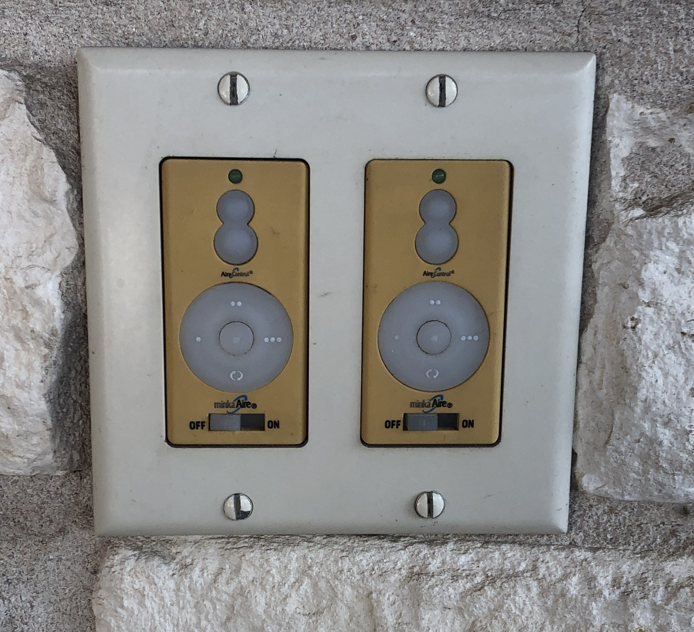

Welcome to the Austin Inland Beach!
Thank you for booking our pool and event space! We are confident you will have a pleasant time.
Please contact us through the Swimply app / website to ask questions or report any issues.
Your hosts will be on-site (but out-of-sight!) for the duration of your visit to see to any needs. We are always open to feedback on your experience.
Below are some instructions to make your visit a breeze.
Rules
- No smoking anything, anywhere on the property.
- No headfirst diving. The water is not deep enough for diving.
- No glass on or near the pool deck or in the water.
- No food or drinks in the pool or hot tub.
- No climbing on or jumping from furniture.
- Please play music at a respectful volume level.
- No objects in the water except host-approved pool toys (ex: no rocks, sticks, alligators, etc.).
- No confetti, party streamers, wedding rice, etc. Such things blow into the pool and clog the filters.
- No dumping anything but water into patio drain.
- No pets or non-humans.
Contact the hosts via the Swimply app / website with any questions or issues.
Parking
Park in either driveway: the semicircular driveway on the north or the side driveway on the east. You may also park on the street, but please prefer the driveways.
Safety
Obey all pool rules. The rules are for your safety.
Reaching poles are on the back of the wall by the pool pumps.
We urge you to please designate one or more Water Watchers to act as lifeguards. Monitor children at all times. Hand off designation of Water Watcher between adults as needed. Water Watcher wristbands are available on the bar countertop
From safekids.org:
"When children are swimming and there are several adults present, make sure kids are actively supervised at all times by choosing a Water Watcher. A Water Watcher is a responsible adult who agrees to watch the kids in the water without distractions and wear a Water Watcher card. After a certain amount of time (such as 15-minutes), the Water Watcher card is passed to another adult, who is responsible for the active supervision."
A First Aid kit is on the bar countertop.
The hosts are CPR trained. However, they are NOT monitoring your activity. If you need to reach them in an emergency, knock and call into the house loudly after calling 911.
Please remove all water toys from the pool at the conclusion of your swim. Toys in the pool tempt little ones to jump back into the water unobserved.
Water toys are NOT a substitute for life preservers/vests for non-swimmers. Life preservers are not provided.
Hard surfaces can get hot in the sun and slippery when wet. Sandals are recommended.
Additional Guests
All guests of any age must be registered as attendees in the Swimply app booking, no matter what activities they may participate in and even if they do not enter the pool. This is a requirement of the liability insurance.
You can add guests during your booking with the Swimply app.
Waivers
Each person *must* sign the waiver provided on arrival. This includes even those that do not enter the water. Each family may have an adult parent or guardian sign a single waiver to cover the entire family.
View Waiver
Bathroom
Enter the house through the door that is left of the east fireplace, at the outdoor kitchen area. Follow the WC signs.
Infants / Toddlers
Please use swim diapers for children that are not yet toilet trained. Do not dispose of diapers of any sort in the toilet.
We keep a small supply of swim diapers should you run out.
Fireplaces
Add the Fireplaces amenity to your booking to use either or both of the patio fireplaces. Fireplaces are wood-burning. Firewood is provided. Use of hot dog / marshmallow cookers and a "hobo pie iron" is included.
No Glass
Please do not use glass items (mugs, glass bottles, glass containers, etc.) anywhere around the pool deck or in the pool or hot tub. Broken glass is nearly invisible when wet, and very dangerous.
If you break a glass item near the pool deck, we must assume that some glass entered the water, and you will be charged $500 to cover the cost of draining, cleaning, and refilling the pool.
Grill / Outdoor Kitchen
Add the Grill / Outdoor Kitchen Amenity to your booking and you have access to the grill, stock pot burner, east fireplace, icemaker, beverage refrigerator, sink, dining table, and toaster oven.
Grill
The propane grill has 4 burners and a smoker. Cooking utensils are provided.
The grill can be rigged on request with heavy steel baking plates covering all or half of the cooking surface. The plates work well for baking or warming pizza, bread, tortillas, pupusas, etc.
Honor Snack/Soda Bar
Snacks and sodas are kept in the outdoor fridge. Help yourself. Pay what you think is fair by using our Venmo.
Toaster Oven
Fresh baked cookies or brownies by the pool? Yes please! Let the host know if you want to use the oven so that we can have it ready for you.
Ceiling fans
The fans are controlled with the circular pads on the east wall of the kitchen. Slide the switch to the on position. Set the speed with the 1-, 2-, or 3-dot buttons on the circular pads.
WiFi
Connect to the "Austin Inland Beach Guest" wireless network.
Speaker
A portable speaker with radio and phone input is provided as a free amenity. You will need to bring your own dongle appropriate for your phone to connect to the speaker.
Feel free to relocate the speaker as desired. Feel free to ask the host for assistance.
Please keep the volume at a respectful level.
Seating
Here is the provided seating:
- 10 bar stools
- 4 chaise loungers
- 6 dining table chairs
- 2 pool ledge Adirondack-style chairs
- 3 love seats
- 1 3-person couch
- 2 accent chairs
- 6 arrow-back dining chairs (please notify host pre-event if you want these)
- 3 folding camp chairs (please notify host pre-event if you want these)
Total number of adult-sized backsides that can be accommodated: 42
In addition, there are 2 fireplace hearths and the spa surround that can be used as seating.
Feel free to re-arrange the seating in any fashion that suits you. The hosts will take care of putting things back after your event.
Towels
Add the Towel Amenity and 5 clean, fluffy, beach towels will be provided. Please leave used towels on the bar stools at the end of your visit.
Umbrellas
Umbrellas will be set up by the hosts before you arrive. If they are not set up, then the breeze is too strong to safely leave them unfurled. Please do not open them yourself: they can be tricky in the wind.
Toys
Use of the floats, beach balls, and other toys provided is included. If you have toys of your own, please discuss with the host before putting them in the pool.
Movie/Video projector
Add the movie projector amenity and the hosts will set up the outdoor theater for you. Use of the host's Netflix, Apple TV+, Amazon Video, and Paramount+ subscriptions is included.
Please keep the volume at a respectful level.
Canopy
Add the 10x10 canopy amenity to your booking. Please indicate to the host at least 24 hours before arrival where you want it placed. If you need the canopy relocated, please ask the host. The canopy happens to fit perfectly over the hot tub.
Misting Fan
After adding the Misting Fan amenity, please indicate to the host where you would like the fan set up (on the west patio, outdoor kitchen area, near the chaise loungers, etc.). The fan speed is adjusted with the knob on the side of the unit.
Fitness Classes
After adding the private fitness class amenity to your booking, please discuss with the host when during your booking you would like the class to be taught, and whether you prefer indoor or outdoor instruction.
Linda is a certified yoga, pilates, Zumba, Jazzercise, and body conditioning instructor.
Exercise mats are NOT provided for hygiene reasons. Feel free to use the spigot and hose to rinse your mats.
Forget Something?
Complimentary sunscreen, sunburn gel, and band-aids are available in a basket at the outdoor kitchen area.
Randall's full-service grocery is about 3 miles away. Ice, drinks, food, swim diapers, etc. are available there.
Special Arrangements
If you're interested in such things as a bouncy house, wedding pavilion, your own yard games or activities, or anything else that strikes your fancy, please discuss with the host at booking time prior to your arrival. Surprise additions upon arrival may not be approved.
Promotions
See current promotions here
Charitable Causes
We are a not-for-profit endeavor: a minimum of 10% of gross proceeds of all bookings are donated to charity.
About the Pool
The pool is a saltwater system. This means that the water is soft and silky. The water is also gentler on skin, eyes, and swimwear as chlorine levels needed to maintain clean water are much lower than that of a regular pool. The salt concentration is less than that of human tears.
Swimming in salt water also appears to offer health benefits. A horizontal review of thalassotherapy research showed that "[c]linical efficacy of thalassotherapy was mostly tested for skin problems (psoriasis, atopic dermatitis, vitiligo) and rheumatic disorders (fibromyalgia, ankylosing spondylitis). Disease severity and the patients’ quality of life significantly improved after intervention, with the majority of evidence for psoriasis and fibromyalgia. Thalassotherapy can be associated with symptomatic improvements in some health conditions." More on benefits of salt water swimming.
The pool is lined with black and mother-of-pearl pebbles that are comfy to the touch and absorb sunshine to warm the water. We believe the effect resembles the Mediterranean sea off Mykonos, Greece.
How We Clean
The pool is strictly maintained to have pH-neutral, clean, clear, algae-free water. A salt water chlorination generator is used to continually produce chlorine in low (1-4 ppm) concentrations: sufficient to kill all microbial contaminants, but not produce eye or skin irritation.
On the day of your arrival, the pool will have been professionally tested and balanced.
(A pool that smells heavily of chlorine is NOT clean: strong chlorine odor is an indicator of improper chemical balancing and signals the presence of sweat, oils, fecal material, and urine in the water. Eeew. Read more from the CDC on chloramines.)
Upholstery, chaises, and chairs are wiped down prior to your arrival with OxyClean disinfectant. All countertops and cooking surfaces are cleaned with appropriate clensers and are disinfected.
Revision 16 Aug 2023
© 2023